Use the Groups palette to group notes into slurs, glissandos, tuplets or ties.
To enter a slur, glissando, tuplet or tie using the Groups palette:
- Select the type of group you want from the Groups palette.
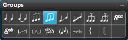
- Drag a rectangle around the notes you want grouped.
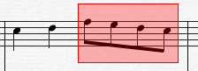
- Release the mouse button.
Overture groups the notes with the selected musical symbol.
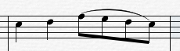
Note: To edit the playback of a tie see Notes>Group>Slur
Editing Ties
You can reshape and reposition any tie in a score.
To change the height of a tie symbol's arc:
- Move the Arrow Cursor over the center of a tie.
The cursor changes into a Drag Cursor when positioned properly.
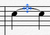
- Drag the center vertically to change the arc of the tie symbol.
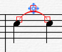
To change the position of either endpoint on a tie symbol:
- Move the Arrow Cursor over either end of a tie.
The cursor changes into a Drag Cursor when positioned properly.
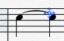
- Click and drag the end to change its position in the score.
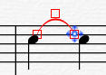
To flip the arc direction of a tie symbol:
- Move the Arrow Cursor over the center of a tie or either of its endpoints.
The cursor changes into a Drag Cursor when positioned properly.
- Click the tie with the Drag Cursor.
Overture selects the tie and displays its three editing handles.
- Choose Notes>Flip>Direction.
Overture flips the arc direction of the tie.
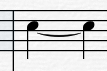
- Reposition the tie mark as desired.
To nudge a tie up or down:
- Move the Arrow Cursor over a tie.
The cursor changes into a Drag Cursor when positioned properly.
- Click the tie with the Drag Cursor.
Overture selects the tie and displays its three editing handles
- Press an arrow key (left, right, up, or down) to nudge the arc in the indicated direction
Editing Slurs
You can reshape and reposition any slur in a score. Each slur has four editing handles that allow you to bend a slur into most any shape. This section discusses how to edit slur symbols in a score.
Slurs have four editing handles: one at each end of the slur and two control points positioned away from the curve.
To change the shape of a slur:
- Move the Arrow Cursor over the arc of a slur.
The cursor changes into a Drag Cursor.
- Drag the cursor to change the shape of the slur.
You can reposition either endpoint by dragging it.
You can change the slur's curvature by dragging anywhere else along the arc. Overture reshapes the slur as though you had actually dragged its control point.
You can even create S-shaped slurs by pushing and pulling on the slur and its endpoints.
To flip the arc direction of a slur symbol:
- Move the Arrow Cursor over the arc of a slur.
The cursor changes into a Drag Cursor.
- Click the slur with the Drag Cursor.
Overture selects the slur and displays its four editing handles.
- Choose Notes>Flip>Direction.
Overture flips the arc direction of the slur.
Editing Glissandos
You can change the length and slope of any glissando.
To change the length or angle of a glissando:
- Move the Arrow Cursor over either end of the glissando.
The cursor changes into a Drag Cursor when positioned properly.
- Drag the end either vertically or horizontally to change the slope and/or length of the glissando.
To change the vertical or horizontal position of a glissando:
- Move the Arrow Cursor over the center of the glissando.
The cursor changes into a Drag Cursor when positioned properly.
- Drag vertically or horizontally to change the position of the glissando.
Editing Tuplets
Overture allows you to insert many different styles of tuplets, but all can be repositioned and reshaped by dragging their editing handles.
Editing handles for straight-line tuplet markers are positioned on the corners and immediately below the number.
Editing handles for curved tuplet symbols are positioned around the curve and are used like slur editing handles.
Complex Tuplets
Overture has two complex tuplet figures:
- nested tuplets
- mixed duration tuplets.
Nested Tuplets
You use the nested tuplets to play the triplet figure below.
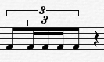
Nested tuplets can only be created using the Notes->Group>Tuplet menu option.
Note:You can not create nested tuplets if any of the notes were creaed as tuplets using the Note Palette tuplet tool.
All tuplet notes must be created using the Notes->Group>Tuplet menu option.
To create the nested triplet figure above:
- Enter the following notes.
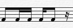
- Select the three sixteenth notes.
- Convert the selected pattern into a three-in-the-time-of two tuplet figure using the Notes->Group>Tuplet menu option.
The tuplet pattern pattern results.
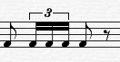
- Select the entire pattern of notes of eighth notes and the sixteenth note triplet figure.
- Convert the selected pattern into a three-in-the-time-of-two tuplet figure using the Notes->Group>Tuplet menu option.
The nested tuplet pattern results.
The three sixteenth note triplets occupy the same amount of time as one eighth note of the triplet figure because the sixteenth notes were already a triplet when they were nested into the enclosing eighth note triplet figure.
Mixed Duration Tuplets
You can convert a selection containing different durations into a tuplet.
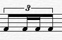
Overture calculates the resulting durations as if each duration were the only duration being converted. For example:
- Enter one eighth note, two sixteenth notes and one eighth note.
- Use the Notes->Group>Tuplet menu option to convert the entire four note passage into a three-in-the-time of-two tuplet figure (conventional triplet).
The two sixteenth notes occupy the same amount of time as one eighth note of the triplet figure because they were not triplets prior to their inclusion in the eighth note triplet figure.
Adding and Editing Ottavas
- Select the type of ottava you want from the Groups palette.
- Click on the score at the starting location.
A ottava symbol is inserted on the score.
- While holding down the mouse, drag to the right to extend the ottava end position.
- To edit ottava setting, double click on the ottava symbol. See Ottava Settings for more information.
Adding Pedal Marks
- Select the type of pedal mark you want from the Groups palette.
- Click on the score at the starting location.
A pedal mark symbol is inserted on the score.
- While holding down the mouse, drag to the right to extend the pedal up position.
- To add raised bumps for the half pedal marks and pedal marks extended types, Alt[option] click along the horizontal line.
- To delete a raised bump, click on it using the Eraser tool.
- To change pedal mark playback settings, double click on the pedal mark.
Adding Pedal Marks
- Select the type of pedal mark you want from the Groups palette.
- Click on the score at the starting location.
A pedal mark symbol is inserted on the score.
- While holding down the mouse drag to the right to extend the pedal up position.
- To add raised bumps for the half pedal marks and pedal marks extended types, Alt[option] click along the horizontal line.
- To delete a raised bump, click on it using the Eraser tool.